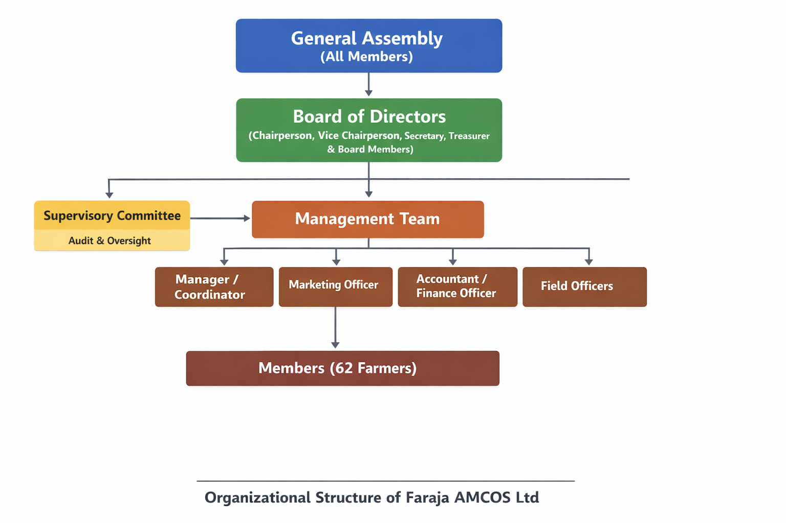
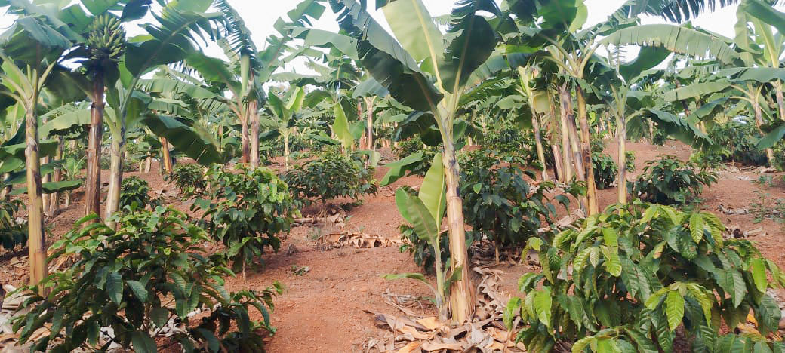
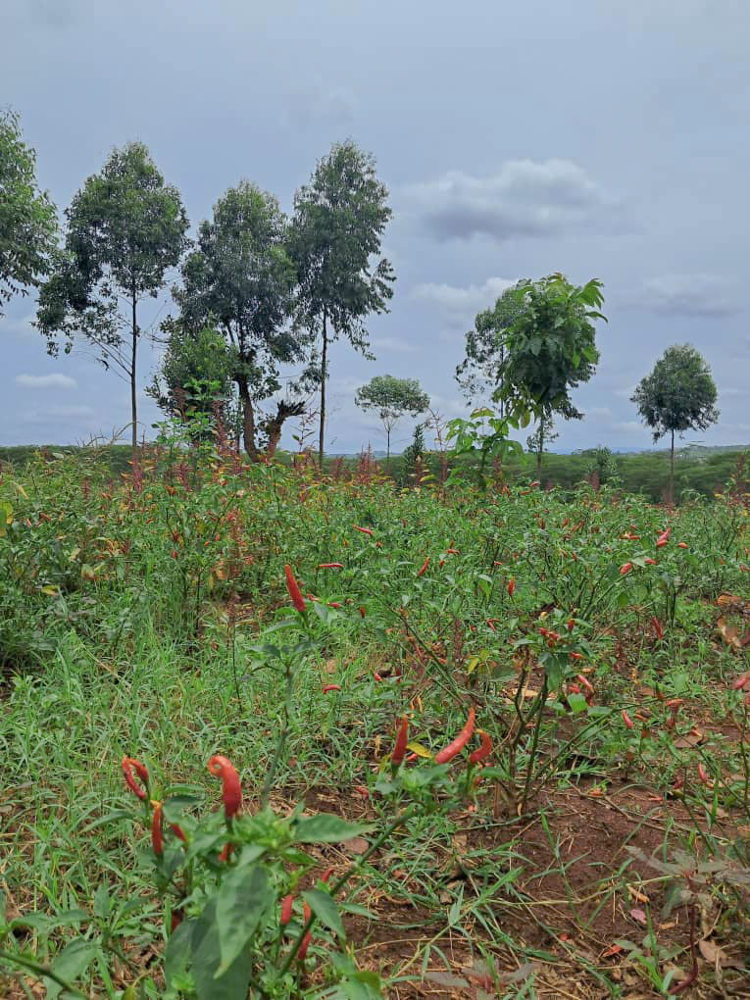
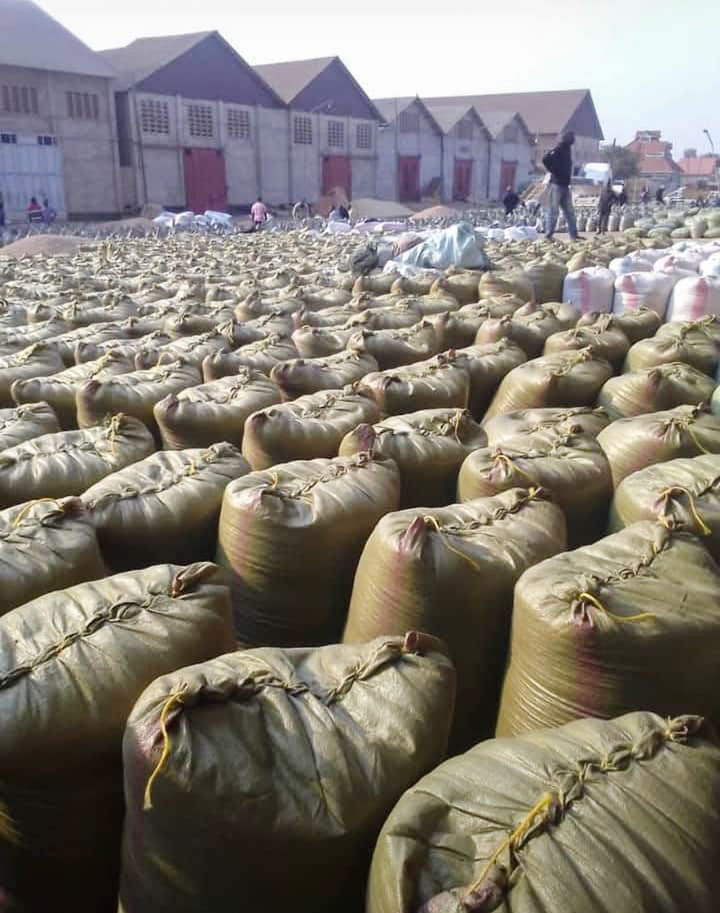
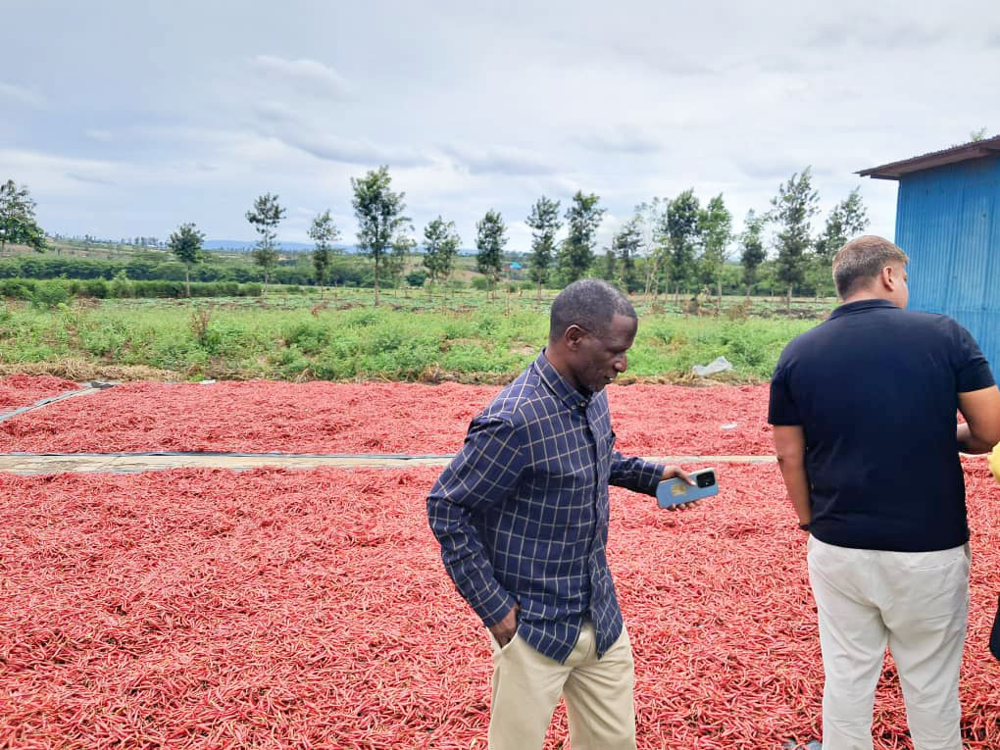
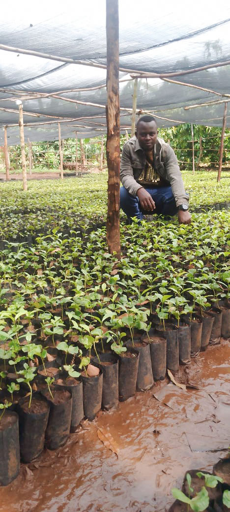
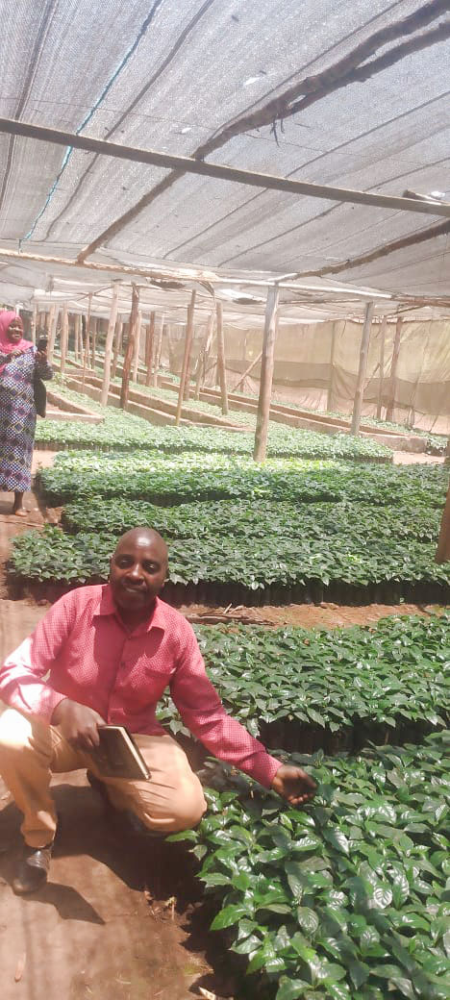
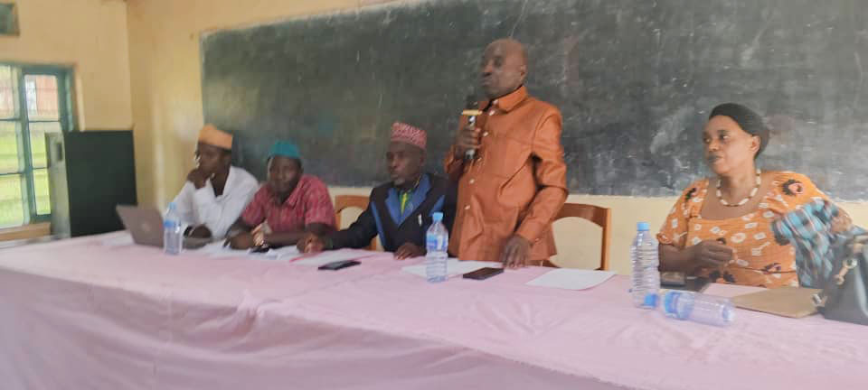
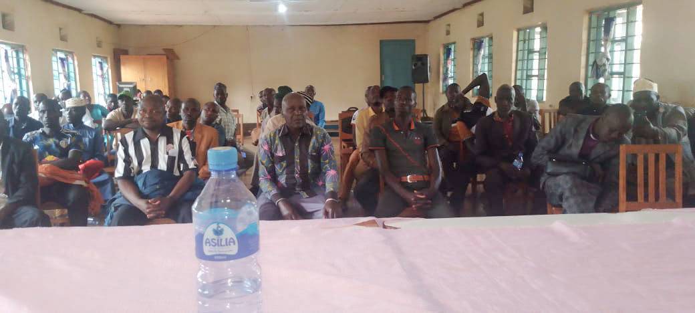
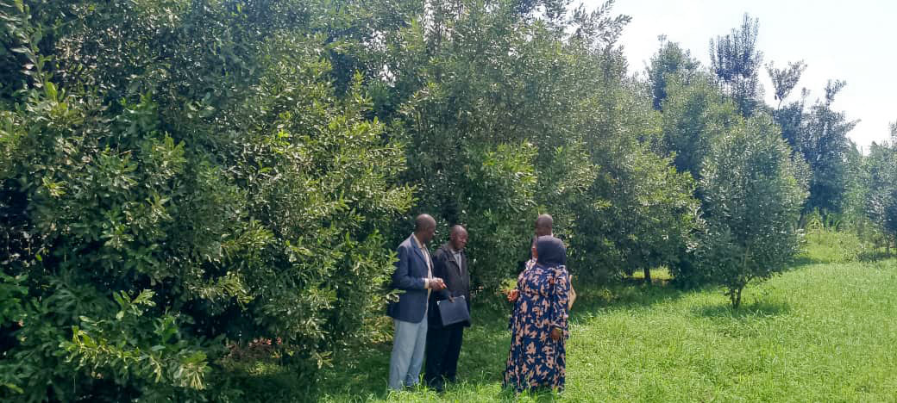

Faraja Agricultural Marketing Cooperative Society Ltd (Faraja AMCOS Ltd) is a farmer-based cooperative organization located in Kyerwa District in Kagera Region, Tanzania. The cooperative was established with the main purpose of bringing farmers together in order to improve agricultural production, strengthen crop marketing systems, and increase the economic well-being of members through collective action.
The cooperative currently has sixty-two registered members who are mainly smallholder farmers involved in the production of coffee, beans, bananas, vanilla, fruits, vegetables, and other agricultural commodities. These farmers work together through the cooperative structure to ensure that they benefit from shared knowledge, improved access to agricultural inputs, better markets, and sustainable agricultural practices.
Through unity, cooperation, and shared vision, Faraja AMCOS Ltd plays an important role in improving rural livelihoods by supporting farmers with training, modern farming techniques, crop aggregation, marketing support, environmental conservation initiatives, and financial empowerment opportunities.
Faraja Agricultural Marketing Cooperative Society Ltd is a legally recognized agricultural cooperative formed by farmers with the aim of promoting agricultural development and improving the economic conditions of its members. The cooperative operates within Kyerwa District in Kagera Region where agriculture is the backbone of the local economy and the main source of income for the majority of rural households.
The establishment of Faraja AMCOS Ltd was motivated by the need for farmers to organize themselves in order to overcome common challenges such as low agricultural productivity, limited access to markets, price fluctuations, and lack of agricultural inputs and technical knowledge. By working together through a cooperative structure, farmers are able to strengthen their bargaining power, access shared services, and achieve better economic outcomes.
The cooperative focuses on improving crop production, facilitating collective marketing, promoting sustainable farming practices, supporting environmental conservation, and strengthening farmers’ access to financial and agricultural services.
Through these initiatives, Faraja AMCOS Ltd contributes to improving food security, strengthening rural economies, and supporting sustainable agricultural development within the region.
GOVERNANCE STRUCTURE

CHAIRPERSON OF FARAJA AMCOS
Hon.JONATHAN MULOKOZI KABILINSHOBELA


Faraja AMCOS Ltd actively supports its members to increase agricultural production and improve crop quality through modern farming practices. Members of the cooperative are engaged in the cultivation of several important crops including coffee, beans, bananas, vanilla, fruits, and vegetables.
The cooperative encourages farmers to adopt improved agricultural techniques such as soil fertility management, proper crop spacing, disease control, irrigation practices where possible, and climate-smart agriculture approaches. These efforts help to increase productivity while ensuring sustainability of natural resources.


One of the major roles of Faraja AMCOS Ltd is organizing collective marketing for agricultural crops produced by its members. Instead of selling crops individually at lower prices, farmers bring their produce to the cooperative where it is aggregated, graded, and marketed collectively.
The cooperative facilitates connections between farmers and reliable buyers both locally and internationally. Through this system farmers benefit from better prices, reduced exploitation by middlemen, and improved market stability.


Faraja AMCOS Ltd operates agricultural nurseries that produce coffee seedlings and tree seedlings. These nurseries play an important role in supporting farm expansion, promoting agroforestry practices, and enhancing environmental conservation.


The cooperative assists farmers in accessing essential agricultural inputs such as improved seeds, fertilizers, and crop protection products. In addition to providing inputs, Faraja AMCOS Ltd organizes training sessions for farmers focusing on Good Agricultural Practices, farm management, climate-smart agriculture, and post-harvest handling techniques.
Apart from crop farming, members of Faraja AMCOS Ltd are also involved in livestock keeping. This includes dairy cattle for milk production as well as small livestock such as goats and poultry. The cooperative supports livestock farmers by promoting improved livestock management practices.

Environmental conservation is an important component of the cooperative’s activities. Faraja AMCOS Ltd encourages farmers to plant trees, protect water sources, and adopt sustainable land management practices.
Faraja AMCOS Ltd works to improve the economic empowerment of its members by facilitating access to agricultural credit and financial services. The cooperative also encourages savings among members and supports initiatives related to value addition.
Join our family of 62 farmers and start your journey towards sustainable agricultural growth. Every field below is required.
Your support helps Faraja AMCOS Ltd to scale its impact. We are committed to using every contribution to enhance the lives of our 62 members through better equipment, training, and environmental initiatives. You can choose to support us financially or through specialized equipment.
Direct Bank Transfer:
Bank Name: CO-OPERATIVE BANK OF TANZANIA
Swift Code: KLMJTZ
Account Number: 01C0404046181
ACCOUNT Name: FARAJA AGRICULTURAL AND MARKETING COOPERATIVE SOCIETY LIMITED
WhatsApp Support:
For more information, click here to message us directly on WhatsApp: +255 781 924 217
Request Full Form:
If you prefer to fill out a formal sponsorship form, please request it via email: csmtanzania1@gmail.com
Headquarters: Kyerwa, Kagera, Tanzania
Phone: +255 781 924 217
Email: csmtanzania1@gmail.com